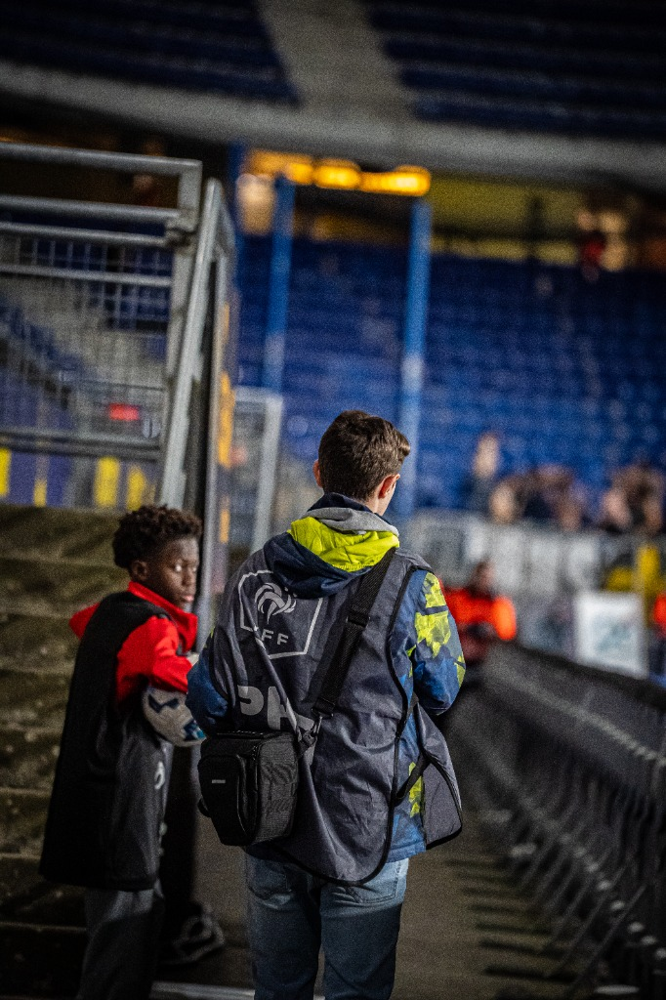

Basé à Montbéliard, je suis passionné par l'intensité et l'émotion du sport. Mon objectif est simple : figer l'instant décisif, la rage de vaincre, et la beauté du geste technique.
Du bord du terrain aux tribunes, je capture l'histoire des matchs pour les rendre inoubliables. Spécialisé dans le football, je couvre les rencontres des U19 Nationaux aux équipes de National 1.
Montbéliard • Belfort • Besançon • Héricourt